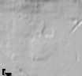

Seattle Center · Terrain pilot
A sourced land elevation sample for Cascadia. Roads, buildings, vegetation and gameplay are separate layers.
Loading scale…

The GLB uses meters and a local origin at the crop center.
UE5 landscape files
16-bit heightmapScale metadataImport the 505 × 505 PNG into a test Landscape. Use the JSON X/Y/Z scales and actor Z offset. Resampling does not increase source detail. Verify orientation, dimensions, vertical datum and adjacent seams before production use.
Source and remaining work
Mapzen Terrain Tiles on AWS, accessed 10 October 2026. Terrain sources include USGS 3DEP, GMTED2010 and SRTM; NOAA ETOPO1. The exact contributing source and vertical datum at each pixel remain unverified.
Dataset · Attribution and terms
Processing preserves the native Mercator grid, crops to Seattle Center, reprojects to UTM Zone 10N and creates a metric landscape. The broader source tiles have suspect offshore depths; this land crop avoids those locations.
Pending: high-detail USGS replacement, measured comparisons, seams, UE5 import, collision and phone performance.